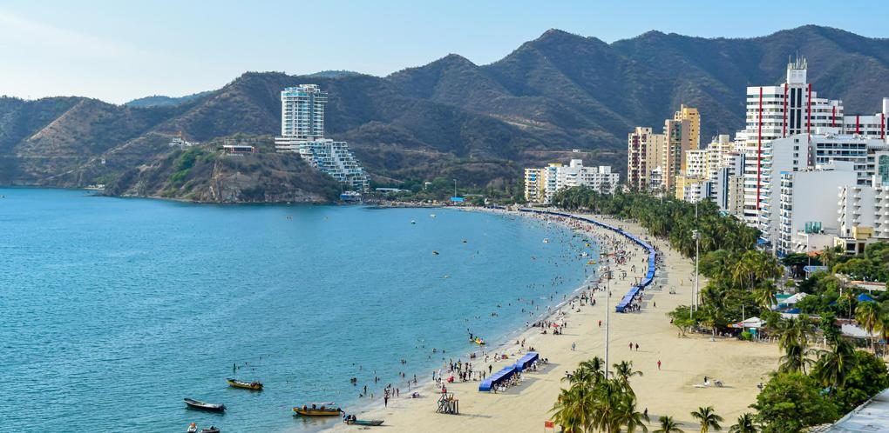
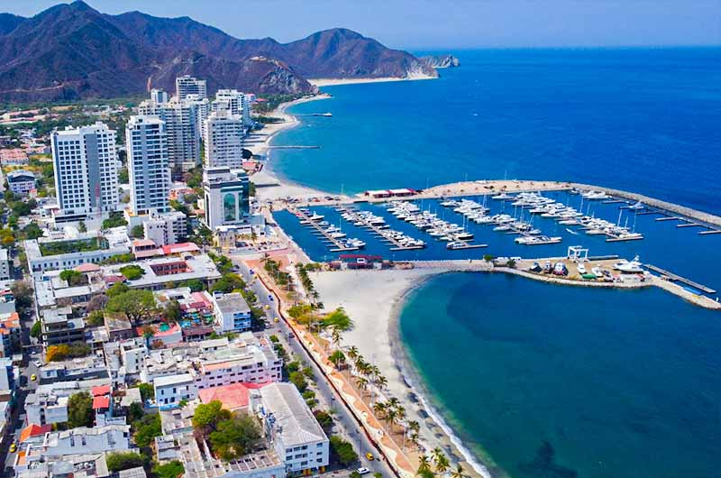
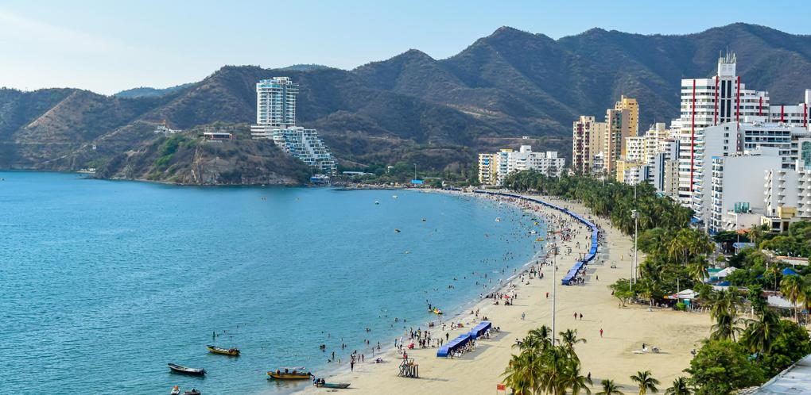
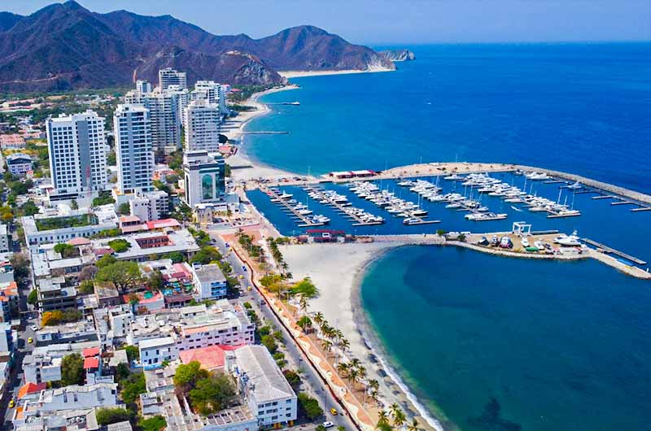
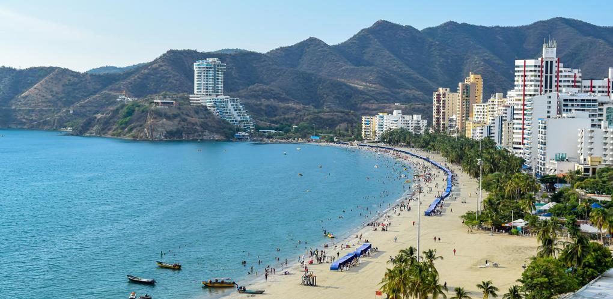
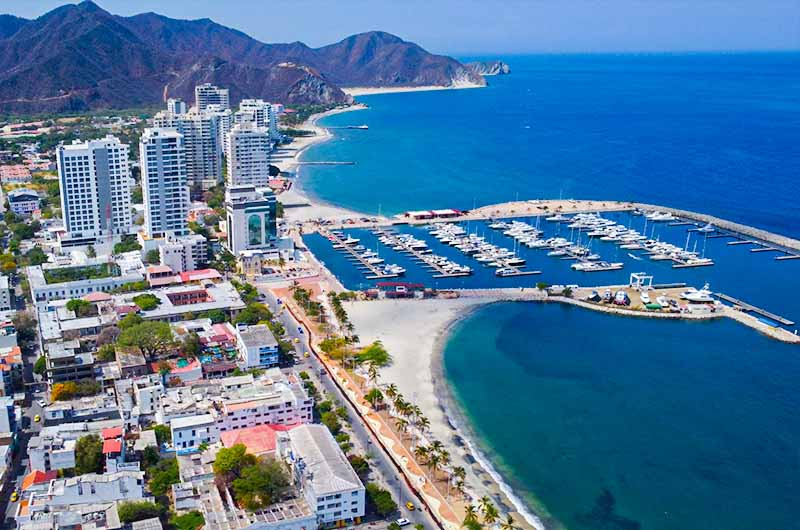

Santa Marta, es un distrito de Colombia, capital del departamento de Magdalena. Desde 1991 fue organizada constitucionalmente como Distrito Turístico, Cultural e Histórico.
 
Podemos buscar paquetes turisticos que incluyen desde vuelos y hospedaje en las siguientes paginas:
  
 